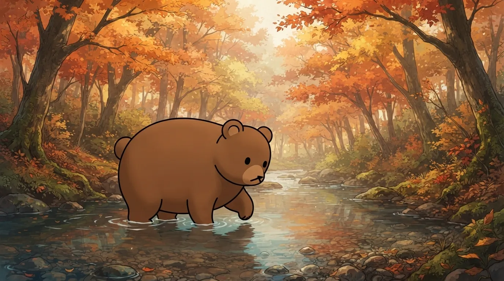
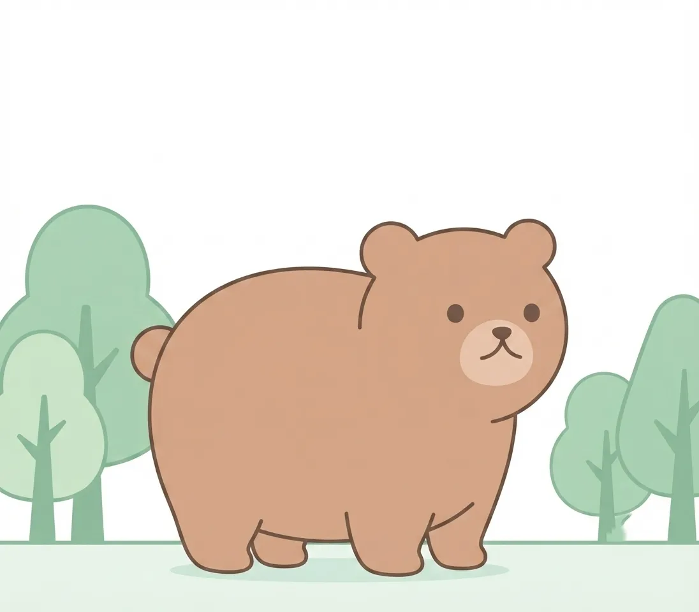
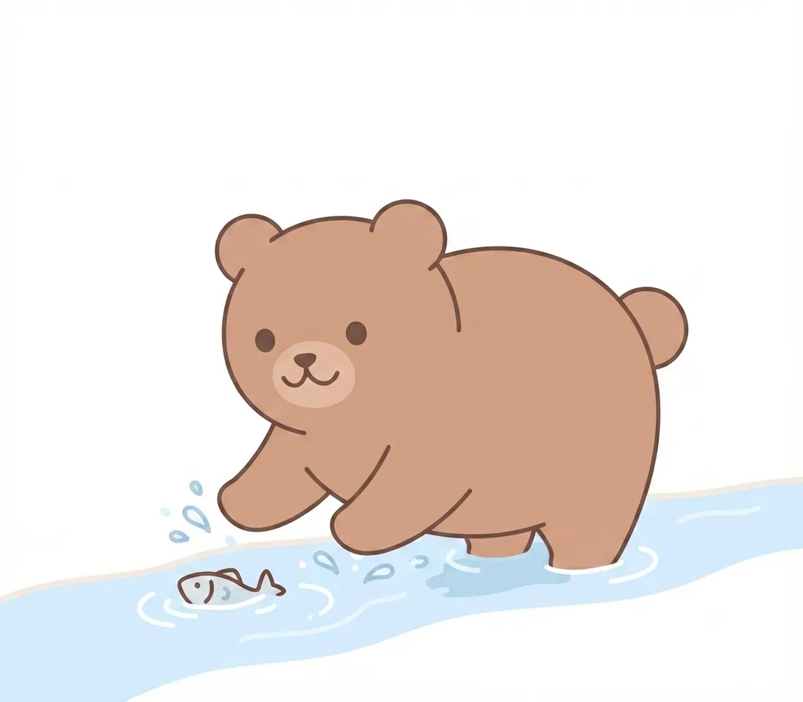
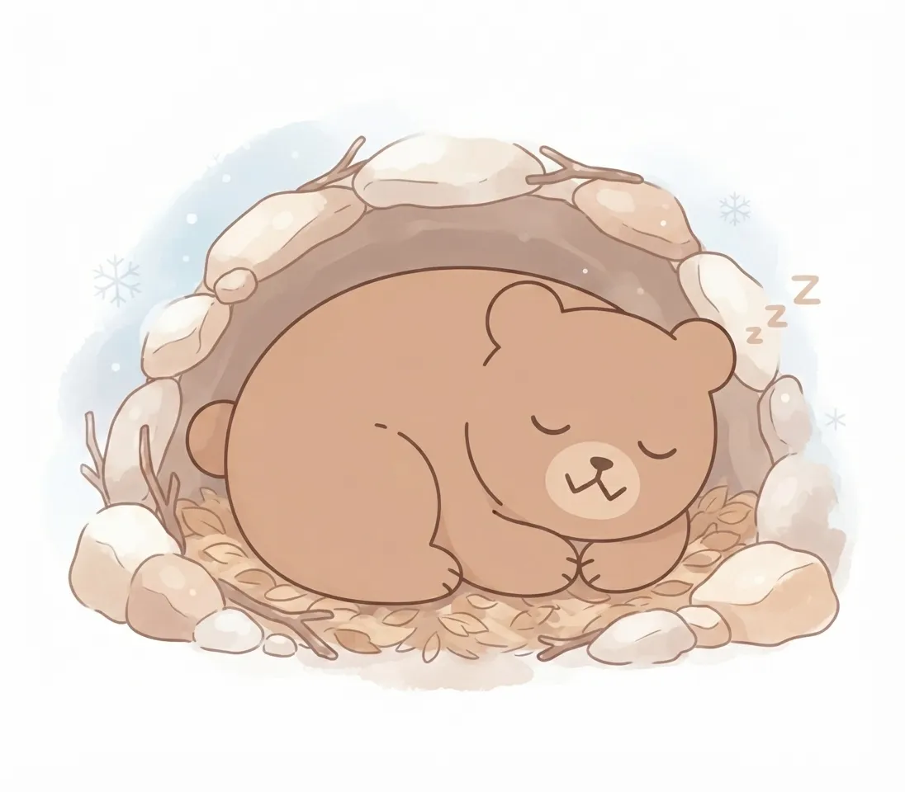
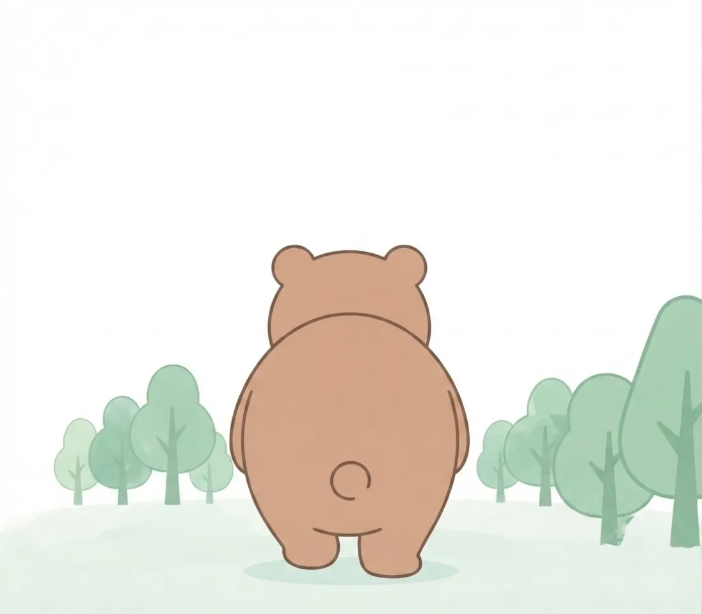

ヒグマ
日本最大の陸の動物。北の森の頂点に立つ。
| 和名 | ヒグマ（エゾヒグマ） |
|---|---|
| 学名 | Ursus arctos yesoensis |
| 英名 | Brown bear |
| 分類 | 食肉目クマ科 |
| 分布 | 北海道の森林 |
| 全長 | 180cm〜280cm |
| 体重 | 約100〜500kg |
| 生態・特徴 | 日本最大の陸上動物。雑食性で、秋には川を遡上する魚も捕らえる。冬は穴にこもって冬眠する。 |
森の王者
圧倒的な巨体と強靭な筋力を持ち、北の豊かな森林の頂点に君臨するヒグマ。木々のざわめきやわずかな物音にも鋭く反応するその感覚器と、静かに大地を踏みしめて歩む重厚な佇まいには、野生本来の厳しさと圧倒的な気高さが宿っています。
当園の展示エリアで見せる、どっしりと落ち着いた振る舞いや、ふと遠くを見つめる深みのあるまなざしからは、北の大地の広大な自然を一身に背負ってきた生き物だけが持つ、揺るぎない存在感が静かに伝わってきます。

川に集まる季節
季節が巡り、川を遡上する魚たちが姿を見せる頃、ヒグマたちの暮らしは大きな転換点を迎えます。冷たい水流の中に堂々と立ち入り、一瞬の隙を突いて力強く獲物を捕らえる姿は、彼らが長年培ってきた優れた狩りの技術と卓越した身体能力を物語っています。
自然界の豊かな恵みを全身で受け止めながら、季節ごとの環境の変化に巧みに適応していくその暮らしぶりは、北の森の食物連鎖がいかにダイナミックで緻密なバランスの上に成り立っているかを教えてくれます。

冬眠という戦略
厳しく冷え込む冬の到来を前に、ヒグマは自らの身体を深い眠りへと委ねるという精巧な生存戦略をとります。秋の間にたっぷりと栄養を蓄え、雪深い森の中に作った巣穴で過ごす数ヶ月間は、命の火を静かに守り抜くための時間です。
飲まず食わずの状態で春の目覚めを待つこの驚くべき生理的メカニズムは、過酷な北国の環境を生き抜くために彼らが獲得してきた進化の結晶です。季節の循環に完全に身をゆだねるその生き方は、自然と共にある命のあり方を静かに物語っています。

人の暮らしと隣り合って
北海道の広大な自然のなかで、ヒグマは古くから私たちの暮らしと隣り合わせの存在として生きてきました。森の豊かさを象徴する王者であると同時に、人と野生動物の境界線をめぐる様々な課題を考えるうえで、欠かすことのできない重要なテーマを投げかけています。
動物園という場所でヒグマの圧倒的な存在感に向き合うことは、単にひとつの動物を観察するにとどまらず、北の大地が抱える生態系の全体像や、私たちが自然環境とどう向き合っていくべきかを見つめ直す、深遠な機会となっています。
